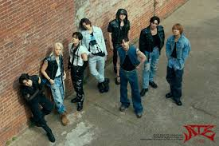

Stray Kids is a boy band formed by JYP Entertainment. The band consists of eight members: Bang Chan, Lee Know, Changbin, Hyunjin, Han, Felix, Seungmin, and I.N; Woojin left the band in 2019. Stray Kids primarily self-produce its recordings; the main production team is named 3Racha and consists of Bang Chan, Changbin, and Han, and the other members frequently participate in songwriting.
I love this group because of their diverse range of sounds they create. They've done almost every genre in music so there is a chance that there's always something for everyone. They've done a lot of hip hop/R&B, rock, ballads, etc... Each member has done their own solo projects and all of them have unique sound. They produce like crazy with 2 to 3 albums every year and that's not including the EPs. Their work ethic is absolutely insane and they've recorded for songs during tours. The main reason I love them is that all of them are all-rounders meaning they can do everything from rapping to singing to dance.
Stray kids website